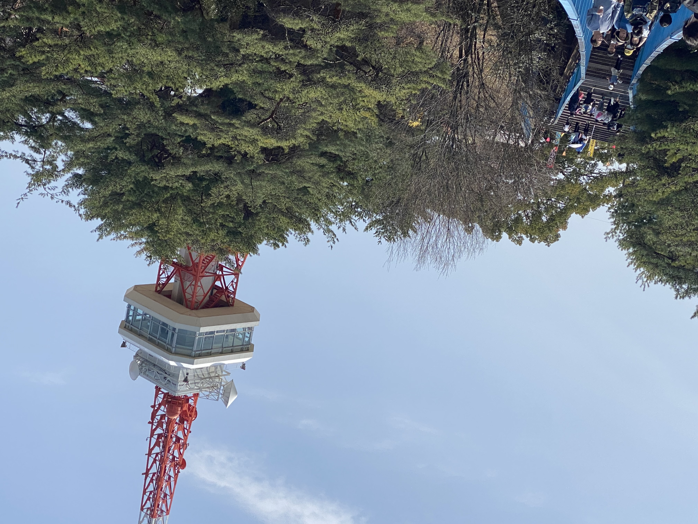
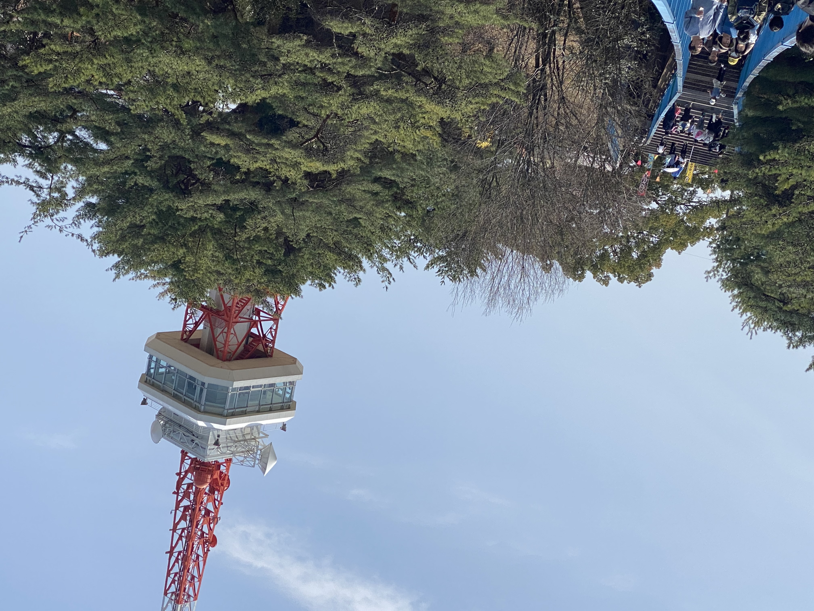
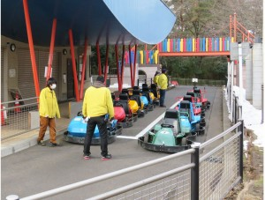
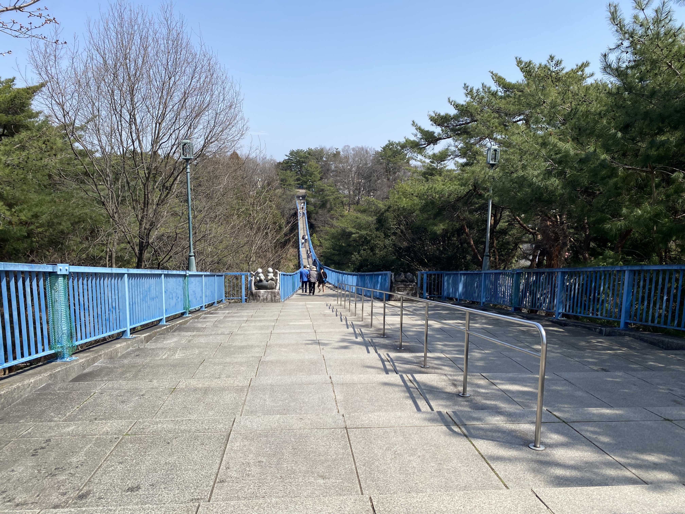

施設紹介

宇都宮タワー（展望塔）
使用料
個人：大人（高校生含む）１９０円、小中学生９０円
団体：大人（高校生含む）１００円、小中学生５０円
無料日
４月１日市民の日、５月５日子どもの日、６月１５日県民の日、１１月２３日勤労感謝の日
休園日
月曜日（月曜日が祝日の場合はその翌日）、年末年始（１２月２９日から１月３日）


個人：大人（高校生含む）１９０円、小中学生９０円
団体：大人（高校生含む）１００円、小中学生５０円
４月１日市民の日、５月５日子どもの日、６月１５日県民の日、１１月２３日勤労感謝の日
月曜日（月曜日が祝日の場合はその翌日）、年末年始（１２月２９日から１月３日）

３歳から中学校３年生まで
（注）身長１４０センチメートル未満と３歳から小学校２年生は保護者同伴
普通券 １回（周）：１４０円
５枚券 ５回（周）回数券：６５０円
１１枚券 １１回（周）回数券：１，４００円
毎週土曜日、４月１日市民の日、５月５日子どもの日、６月１５日県民の日、１１月２３日勤労感謝の日
月曜日（月曜日が祝日の場合はその翌日）、年末年始（１２月２９日から１月３日）


橋 長：１５２．０m（支間長 １５０．０m）
高 さ：約３０m（市道９０８号線より地上高さ２５m）
幅 員：１．５～４．０m